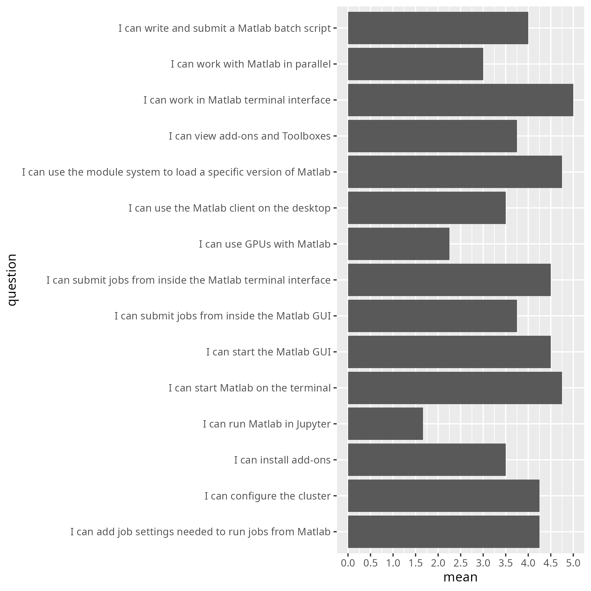

Evaluation¶
- Date: 2025-03-25
- language: MATLAB
- Registrations: ?
- Participants: 4
- Number of evaluations filled in: 3 (75% response rate)
- Average course satisfaction: 7.25/10.0
- success_score.txt: 77%
- Analysis script: analyse.R
- Average confidence per question as a table: average_confidences.csv


comments.txt¶
- The course material is excellent. However, it is not necessary that someone reads it in real time in a zoom meeting, and the level of interaction in the zoom meeting has been low. I could just as well have gone through the course material in my own pace at a time that suited me and learned almost as much (my background is that I know some Linux, Matlab, and cluster batch job submission from before).
future_topics.txt¶
- using matlab with thirdparty tools